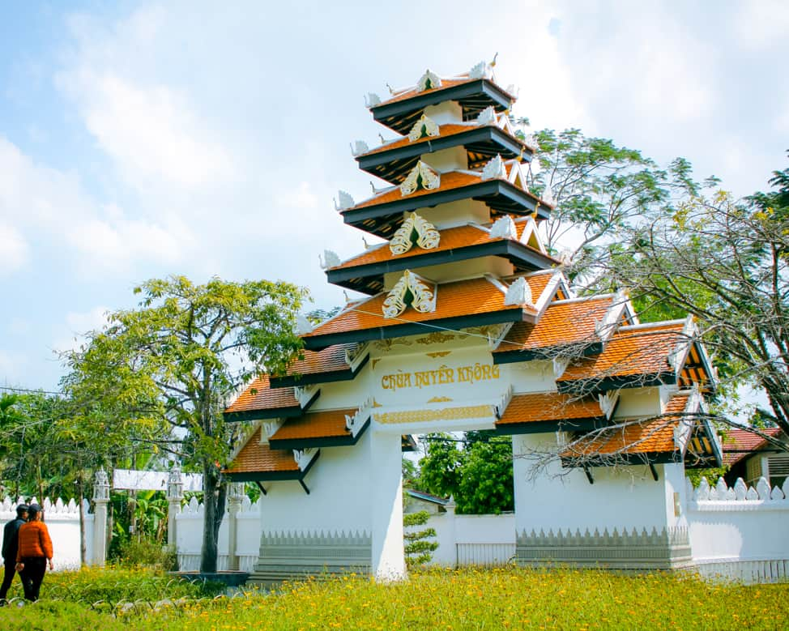

Chùa Huyền Không
⭐ 4.7 / 5
📍 Địa chỉ: phường Kim Long, TP Huế
🕒 Giờ mở cửa: Cả ngày
🎫 Giá vé: Miễn phí
📖 Giới thiệu
Chùa Huyền Không là một trong những ngôi chùa nổi tiếng của Huế, được nhiều người biết đến bởi không gian thanh tịnh, kiến trúc hài hòa với thiên nhiên và vẻ đẹp yên bình hiếm có. Chùa nằm cách trung tâm thành phố Huế không xa, ẩn mình giữa rừng thông xanh mát, tạo cảm giác tách biệt khỏi sự ồn ào của phố thị.
Ngôi chùa được xây dựng theo phong cách giản dị nhưng tinh tế, mang đậm nét thiền môn truyền thống. Khuôn viên rộng rãi với hồ nước, vườn cây, lối đi rợp bóng mát và những tiểu cảnh đẹp mắt khiến nơi đây trở thành điểm đến lý tưởng cho những ai muốn tìm sự bình yên trong tâm hồn.
Không chỉ là nơi tu hành của các tăng ni, chùa Huyền Không còn là điểm tham quan hấp dẫn đối với du khách yêu thích văn hóa Phật giáo và thiên nhiên xứ Huế.
⚠️ Lưu ý
🙏 Ăn mặc lịch sự, kín đáo khi vào chùa.
🔇 Giữ yên lặng, tránh gây ồn ào.
🚯 Không xả rác, bảo vệ cảnh quan.
📷 Chụp ảnh nhẹ nhàng, tôn trọng không gian tu hành.
🏯 Các công trình nổi bật
● Chánh điện: Nơi thờ Phật trang nghiêm và thanh tịnh.
● Vườn thiền: Không gian yên bình với cây xanh và tiểu cảnh đẹp.
● Hồ sen: Tạo cảnh quan thơ mộng, mát mẻ.
● Rừng thông quanh chùa: Mang lại không khí trong lành, yên tĩnh.
● Thư pháp và câu đối: Nét đẹp văn hóa đặc trưng của chùa.
📸 Gợi ý tham quan
● Nên đến vào sáng sớm để tận hưởng không khí trong lành.
● Dạo quanh khuôn viên để ngắm cảnh và thư giãn.
● Chụp ảnh tại hồ sen, vườn thiền và lối đi rợp bóng cây.
● Kết hợp tham quan các ngôi chùa nổi tiếng khác ở Huế.
● Giữ tâm thế nhẹ nhàng để cảm nhận vẻ đẹp thanh tịnh nơi đây.